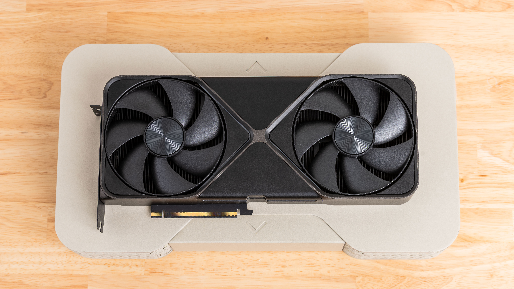

Si tenés una GPU Nvidia y actualizaste recientemente al driver Game Ready 595.59, desinstalalo. Nvidia confirmó que ese driver tiene un bug que afecta el control de los ventiladores en las series RTX 3000, 4000 y 5000, y ya lo retiró de sus canales de distribución mientras investigan la causa.
¿Qué pasó exactamente?
El driver 595.59 fue lanzado como parte de la actualización normal de Game Ready Driver. Rápidamente empezaron a aparecer reportes en Reddit y foros de Tom's Hardware de usuarios con ventiladores comportándose de manera errática: girando a máxima velocidad sin carga, dejando de responder al control de temperatura, o directamente apagándose cuando no deberían.
Nvidia confirmó el problema y tomó la decisión de hacer rollback: sacó el 595.59 de la página de descargas y está mostrando la versión anterior como la recomendada mientras trabajan en un fix. El problema afecta a toda la familia RTX — desde las RTX 3000 hasta las nuevas RTX 5000.
¿Por qué importa?
Los ventiladores que no responden a la temperatura son un problema serio. Una GPU que no puede enfriar bien bajo carga puede sufrir throttling térmico (que baja el rendimiento automáticamente para protegerse) o en el peor caso apagarse. En verano o en ambientes sin buena ventilación, el riesgo es mayor.
El timing tampoco ayuda: el 595.59 salió justo con la semana de lanzamiento de la RTX 5060, el driver venía incluido como recomendado para la nueva placa. Muchos usuarios que compraron la 5060 esta semana probablemente ya tienen el driver problemático instalado.
Qué hacer ahora
Si instalaste el 595.59, la solución es volver al driver anterior. Podés hacerlo de dos formas:
Opción 1 (más limpia): Usá DDU (Display Driver Uninstaller) en modo seguro para limpiar el driver por completo, después instalá la versión anterior directamente desde el sitio de Nvidia.
Opción 2 (más rápida): Desde el Panel de Control de Nvidia o desde GeForce Experience, podés hacer rollback al driver anterior sin necesidad de DDU. Suele funcionar, aunque la opción 1 deja el sistema más limpio.
Si no sabés qué versión tenés instalada, abrí el Panel de Control de Nvidia y fijate en la esquina inferior izquierda — dice el número de driver que estás corriendo.
Cuándo sale el fix
Nvidia no confirmó fecha para el driver corregido. Lo que sí confirmó es que el 595.59 ya no está disponible para descarga nueva. Si no lo instalaste, no te va a aparecer en las actualizaciones automáticas. Si lo tenés, tomate cinco minutos para el rollback — no vale la pena el riesgo.